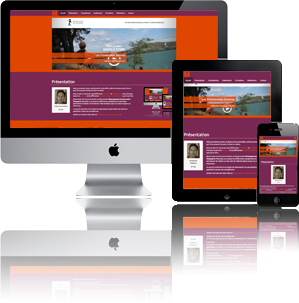

Web, journalisme, photo, audiovisuel et multimédia, voilà les domaines que j'aime et qui m'ont amené à vouloir
en faire un métier.
Dans ce site CV, retrouvez mes différentes formations et compétences. Vous trouverez aussi mon parcours et les
différentes réalisations web et audiovisuelles que j'ai pu faire.
Je suis actuellement en formation de Programmation de sites web au CNAM d'Aix-en-Provence, pour y acquérir les
différentes compétences du webmaster permettant de réaliser un site web de l'idée de départ jusqu'à sa mise en
ligne et sa mise à jour.
Je suis à la recherche d'un emploi de webmaster me permettant de mettre en application toutes ces compétences
acquises et en voies d'acquisition.
Gardez une trace de cette visite et téléchargez mon CV au format pdf.